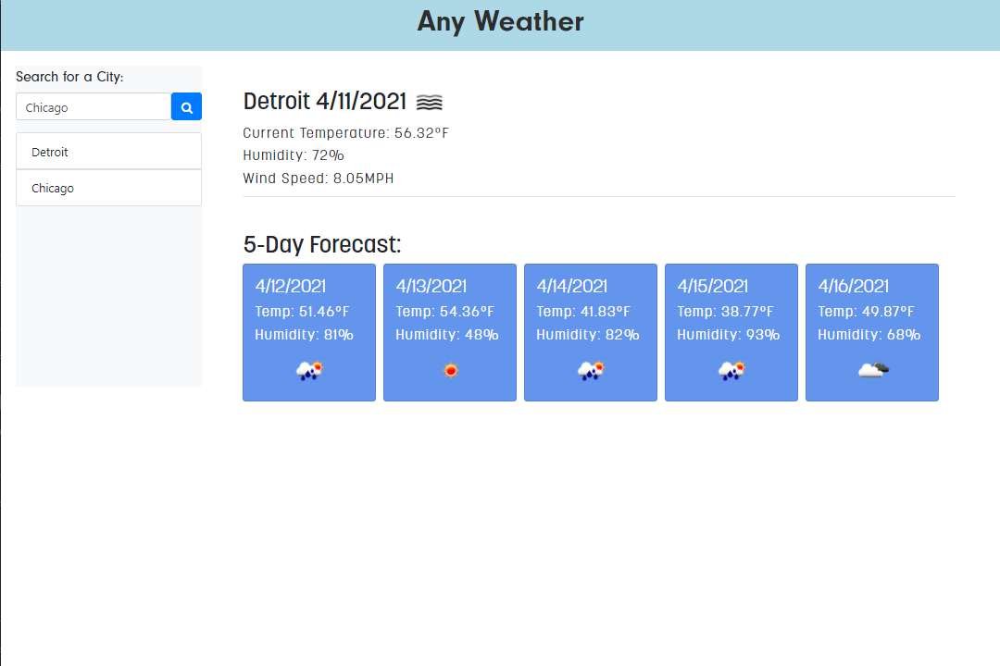

WEB
PROJECTS
40 Watt Coaching

Tim Fortescue is an executive coach San Francisco. He reached out to me for a logo and ended up with a website as well. Take a look around and maybe book him for a session.
VaxTrax

An information based web application. For this app, I handled the front-end. The concept for the app stems from the uncertainty surrounding the Covid vaccines and fear of the unknown. VaxTrax provides up to date information about the novel Covid-19 virus and allows individuals to track and inform others about their experience with recieving the vaccine.
We wanted to create a platform that might bring to light what people are saying about the Covid-19 vaccine and what they experienced in getting vaccinated. When a user signs in, they are able to access local and national data about Covid-19 and vaccination rates. When a user wants to say something about their experience, they have the ability to blog about it and see what others have experienced. Fear of the unknown is powerful, let VaxTrax ease your mind.

Nalej

Nalej is a learning app intended to satisfy those with an undeniable thirst for… knowledge. It features a random fact of the day that displays as soon as the user opens the app. The user can then utilize the provided calendar to click on any day of the year and receive a fact about that day in history. Once the user clicks the date, an entertaining gif will display above the calendar. If the user types in a number, they will receive information related to that number. We envisioned an app that relieves the burden of having to decide what to learn about by force-feeding new information directly to the user.
Any Weather
Any Weather is an application utilizing Open Weather API to retrive weather data and dynamically update HTML. Upon accessing the applcation, the user is able to search a city and recieve the current weather as well as the 5-Day forecast. Each serached city appears beneath the search window, allowing the user to toggle between cities to compare weather. The current weeather displays the temperature, humidity, and wind speed, and is accompanied by a weather icon reflecting the current conditions. The 5-day forecast features the date, temperature, humidity, and weather icon.